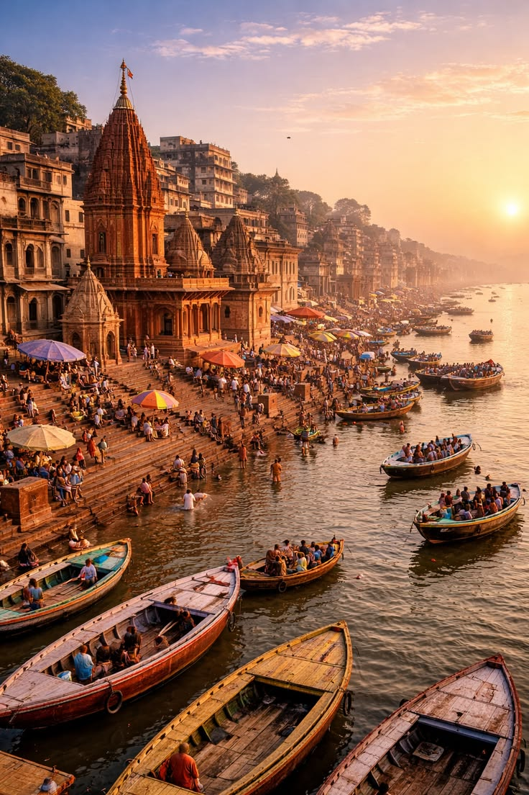
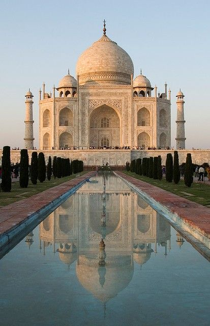
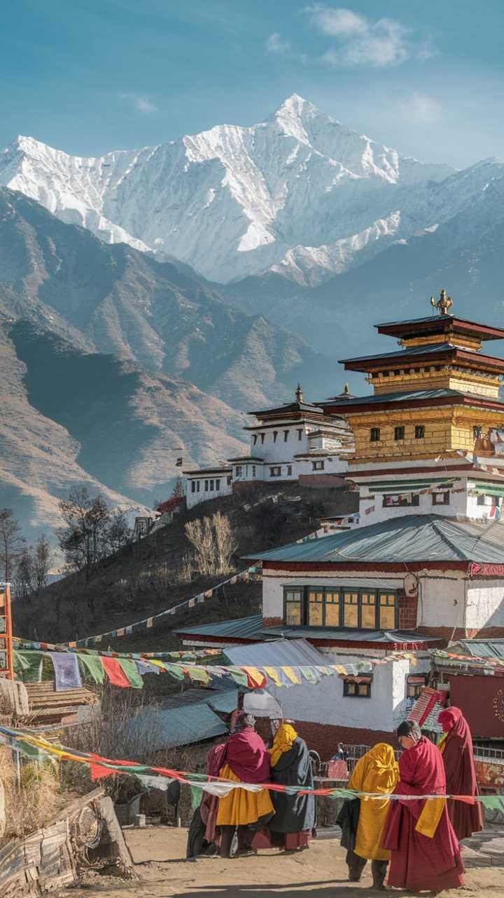

My name is Harshita. I am doing a UI/UX designer course from Arena Animation GTB Nagar.This is my photogallery which I learnt to make in my class in which I have mentioned different places to visit and explore. In these pictures i have shown Hawa Mahal, Banaras, Tajmahal, Kedarnath temple, Sikkim temple and the Valley of Flowers.Thank you for visiting my page.